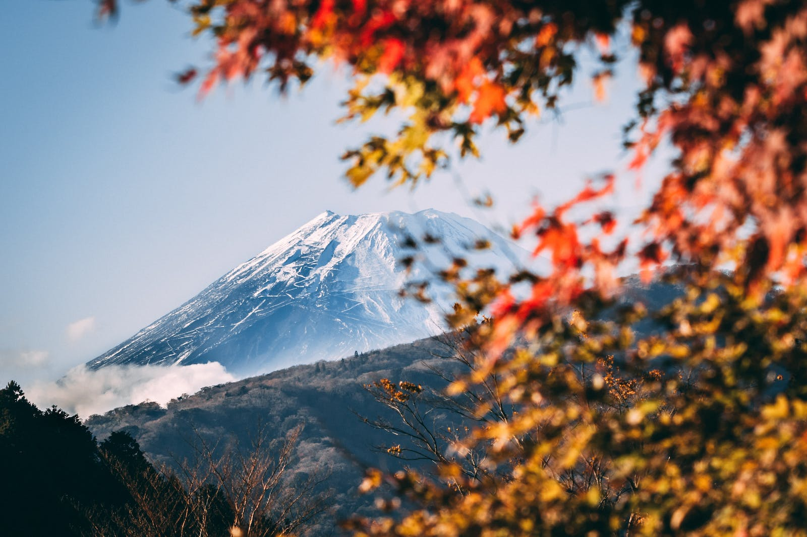

Header Logo
Store
About
Contact
After a long walk from Subaru station to mount Fuji...
Rest inside "Omo Omuraisu" and see what our menu has to offer! If you're done visiting mount Fuji, stop and relax at our spring onsen!
Book Now

Our specialties include
Soft and flavorful mochi!
Colorful sushi
Everyone's favorites, onigiri rice balls
Steamy dumplings
Let me tell you, after descending mount Fuji, this place was just the thing I needed. A warm bath outside after a plate of sushi? Heaven.
-Odin, a faithful client.
Make a reservation now!
See our full menu by clicking that button right over there!
Menu